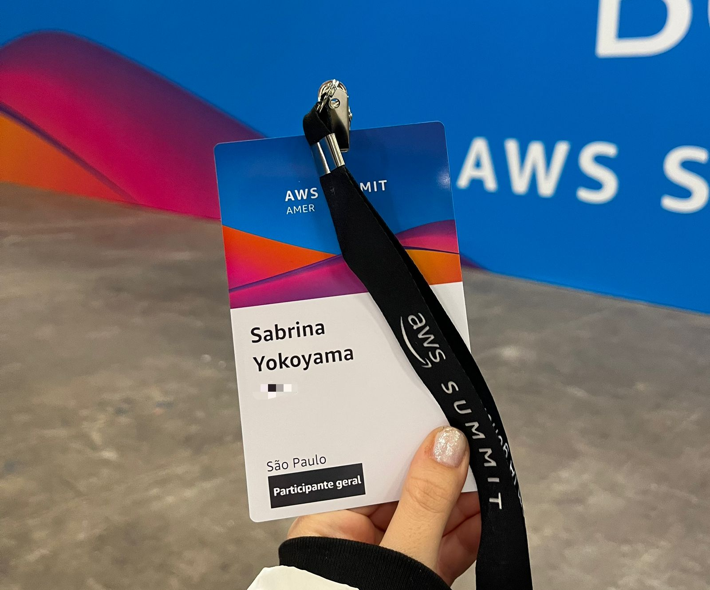
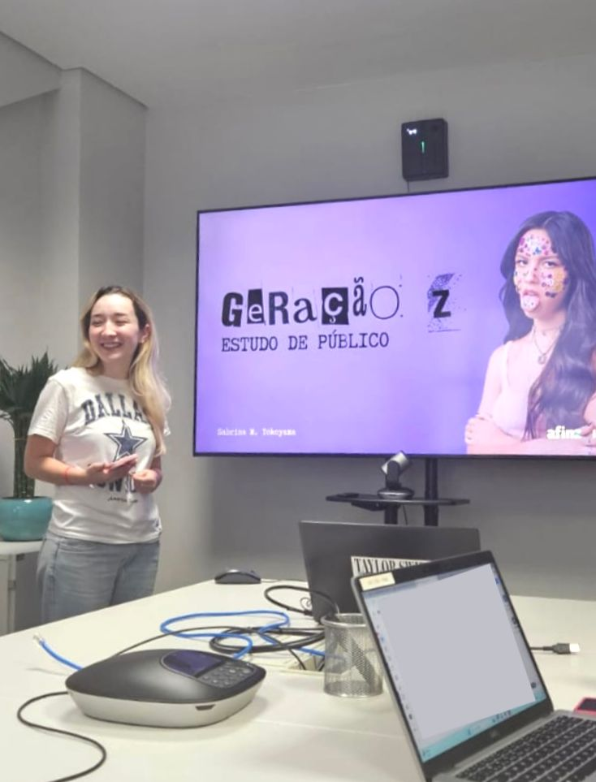
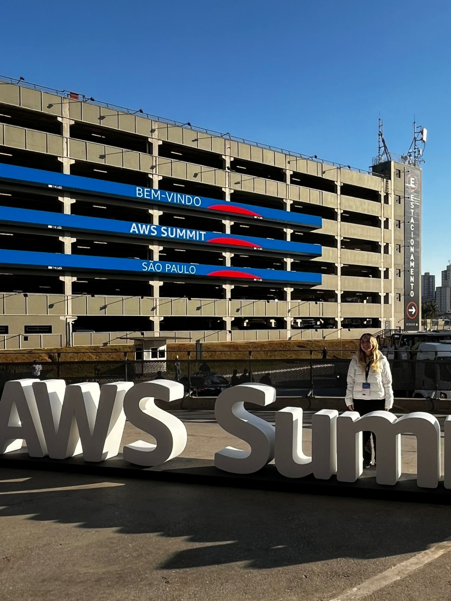

Seja bem-vindo(a) ao meu portfólio.
Sobre Mim
Sou estudante de Ciência de Dados e Inteligência Artificial na Universidade de Sorocaba e atuo como Assistente de Dados no Banco Afinz há três anos. Tenho experiência com análise, modelagem e visualização de dados, apoiando áreas financeiras e operacionais na tomada de decisão por meio de informações estratégicas.
Meu interesse por tecnologia surgiu da busca por eficiência em processos e pela criação de soluções práticas. Trabalho principalmente com SQL, Python e ferramentas de Business Intelligence, focando em extrair valor dos dados por meio de análises bem estruturadas, automações e relatórios claros.
Atualmente, estou aprofundando meus estudos em aplicações práticas e éticas de Inteligência Artificial, análise de dados com grafos e programação em Java, com planos de expandir meus conhecimentos em R e estatística aplicada. Vejo os dados como uma ferramenta para gerar impacto, identificar oportunidades e construir soluções com propósito.
Objetivos
Meu objetivo é continuar crescendo na área de tecnologia, evoluindo em Ciência de Dados e Inteligência Artificial, aprendendo novas ferramentas, linguagens e abordagens para resolver problemas reais, ao mesmo tempo em que aprofundo os conhecimentos que já aplico no dia a dia.
Neste ano, quero me dedicar especialmente a compreender melhor a Inteligência Artificial, desde seus fundamentos até aplicações práticas e o uso responsável da tecnologia, participando de projetos que envolvam dados, automação e soluções que gerem impacto positivo.

AWS Summit 2025
Estudo de Público Gen Z
AWS Summit 2025